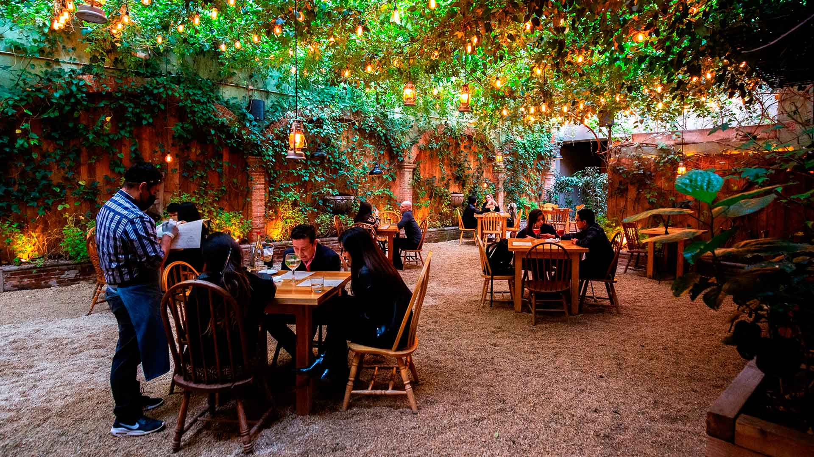
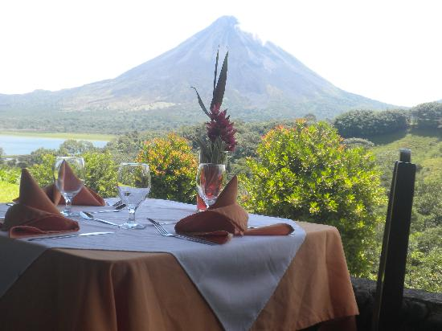

La Pasión nació en 2018 gracias a la iniciativa de cinco amigos que compartían el amor por la gastronomía y la naturaleza. Después de años soñando con crear un lugar especial, decidieron unir sus ideas y esfuerzos para fundar un restaurante donde las personas pudieran disfrutar de buena comida en un ambiente al aire libre. Inspirados por la riqueza cultural y culinaria de Guatemala, construyeron un espacio acogedor que hoy se ha convertido en un punto de encuentro para familias, amigos y visitantes.

En La Pasión queremos que cada visita sea inolvidable. Nuestro restaurante al aire libre combina deliciosa comida guatemalteca, música ambiental y un entorno natural relajante. Buscamos que nuestros clientes disfruten de momentos especiales con familiares y amigos, rodeados de jardines, aire fresco y una atención cálida que los haga sentir como en casa.

Nos encontramos en un hermoso espacio natural cerca de Antigua Guatemala, rodeados de jardines, árboles y vistas a las montañas. Nuestro restaurante ofrece un ambiente tranquilo y fresco, ideal para disfrutar de una comida al aire libre mientras se aprecia la belleza natural de Guatemala.